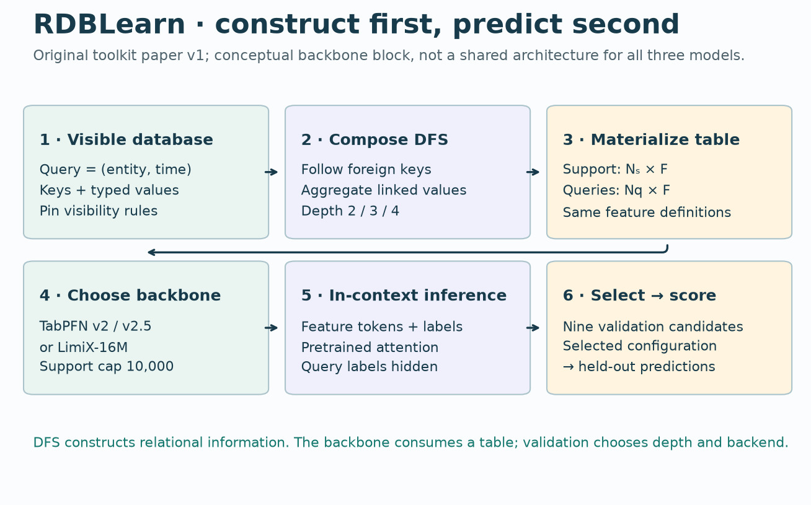
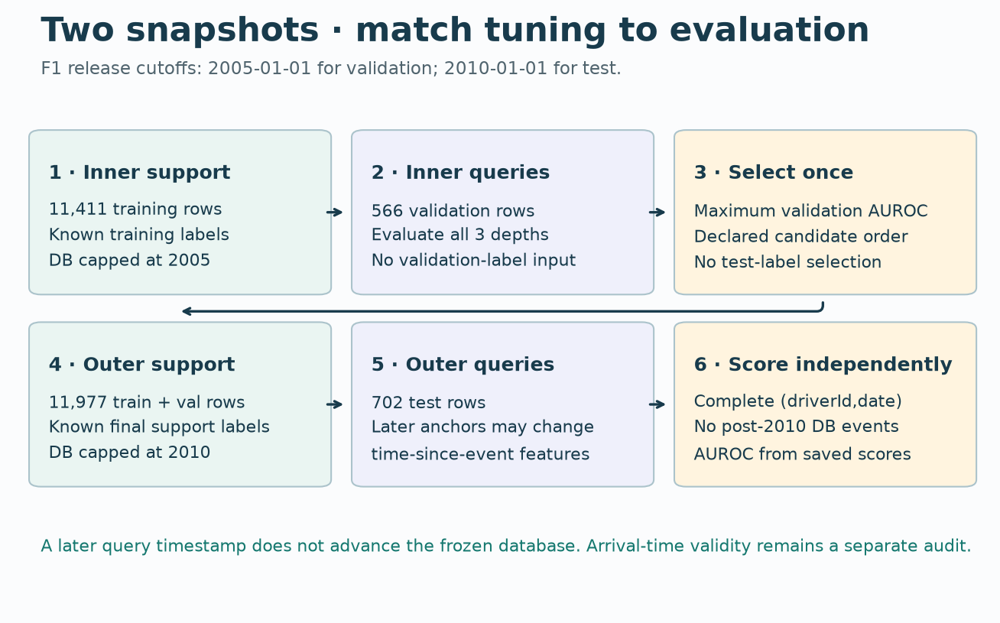
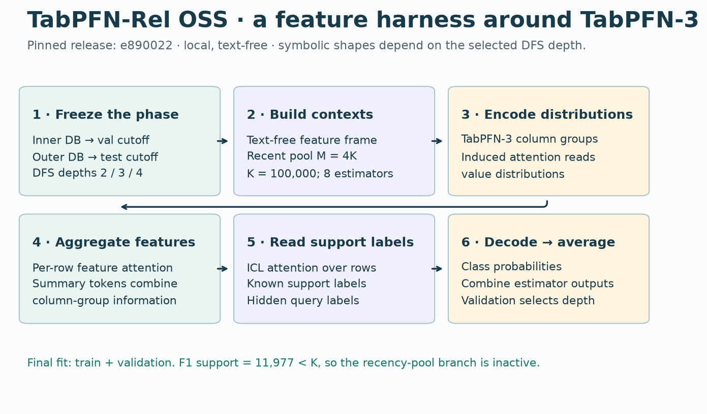
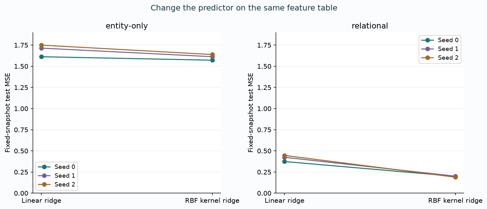

B14 · The flattening challenge¶
RDBLearn and TabPFN-Rel · research bridge · core lesson
B13: synthetic relational data → B14: construct the representation → B23: defend a research baseline
In B13, a parent-mean feature made a held-out synthetic schema surprisingly easy. That leaves a question: before learning a relational encoder, how much can a careful feature builder already solve? Your mission is to make the case for relational learning with evidence. That requires giving this alternative a fair chance.
Your win: trace a prediction back to the exact records it may read, then design a predictor swap that changes only the predictor. Read sections 1–4 first; the lab and reproduction contract are a separate work session.
See the idea · then trace the details
A retrieval baseline sets a stronger flat-table bar
Follow two information paths: the query itself and the labeled rows it retrieves.
1Query + training memory
Features find neighbors; labels supply values
Encode the query and eligible training rows. Search in learned key space; the query must not retrieve itself during training.
2Read the neighbors
Value = label embedding + key correction
Distance-based weights combine values E(yᵢ) + T(k − kᵢ). The label and directed difference play different roles.
3Keep the direct path
Query state + retrieved context → head
Add the retrieved representation to the query representation, then use the prediction network. Retrieval is inside the model, not a replacement for its head.
Pause and predict: If two neighbors have equal weights, must they contribute equally?
No. Their learned value vectors can differ in both magnitude and direction. A weight alone does not describe a contribution.
Answer: No. Their learned value vectors can differ in both magnitude and direction. A weight alone does not describe a contribution.
1 · Flattening can retain relational information¶
A foreign key links a child record to an entity in another table. A relational aggregate summarizes linked records: for example, the mean value of a driver's earlier race results. Flattening constructs one fixed-length feature row for each prediction query. It need not discard every relationship: the joins used to construct the features already encode some of them.
Deep feature synthesis (DFS) composes joins and aggregations along allowed key paths. Its depth limits composition. A deeper setting adds candidate operations; it does not add neural layers. A backbone is the predictive model consuming the resulting feature table.
In plain terms. Put the relevant history into useful columns, then ask a strong table model to predict. Whether this is sufficient is an empirical question.
RDBLearn §3 describes this recipe. The companion encoder analysis is a different paper about the role of encoders in in-context prediction. Its assumptions are not a universal proof that learning relational representations is unnecessary.
Model architecture · RDBLearn¶


- Visible database
Query = (entity, time) · Keys + typed values · Pin visibility rules - Compose DFS
Follow foreign keys · Aggregate linked values · Depth 2 / 3 / 4 - Materialize table
Support: Nₛ × F · Queries: Nq × F · Same feature definitions - Choose backbone
TabPFN v2 / v2.5 · or LimiX-16M · Support cap 10,000 - In-context inference
Feature tokens + labels · Pretrained attention · Query labels hidden - Select → score
Nine validation candidates · Selected configuration · → held-out predictions
The feature builder is deterministic once the database, transformations and depth are fixed. The in-context learning (ICL) predictor reads labeled support rows and unlabeled query rows. Its pretrained parameters supply prior knowledge; fitting support does not imply retraining that foundation model from scratch.
For the original toolkit experiment, depth ∈ {2,3,4} and backend ∈ {TabPFN v2, TabPFN v2.5, LimiX-16M} give nine validation candidates. Each uses at most 10,000 support examples. Validation chooses the configuration; test labels score the selected configuration. Toolkit §5
Implementation scope. B14 implements the key temporal and aggregation mechanisms visibly. It also includes the original harness and backend source for inspection. The small ridge/kernel predictors below are course diagnostics, not reimplementations of either foundation model. Original backbone pretraining is outside this lesson's executed scope.
2 · A timestamp is an information contract¶
A query key is the pair (entity_id, prediction_time). A driver can occur at several times, so joining or scoring by driver ID alone can silently mix predictions.
A database snapshot cutoff limits the newest database state available to an evaluation phase. A record's event time says when the event occurred. Its available time says when the record became usable. These may differ: yesterday's result can arrive tomorrow.
Worked example · one query, four candidate records¶
Query: entity A at day 14. Database snapshot: day 10. Local feature:4.
| Record | Event day | Available day | Value | Visible at boundary 10? |
|---|---|---|---|---|
| A1 | 2 | 3 | 2 | Yes |
| A2 | 6 | 7 | 6 | Yes |
| A3 | 7 | 12 | 100 | No: arrived later |
| A4 | 10 | 10 | 20 | No: event at strict boundary |
The effective boundary is min(14,10)=10. The course rule requires event_time < boundary and available_time ≤ boundary. We read values [2,6]: count 2, mean 4, last 6. The feature row is [local4, count 2, mean 4, last 6]. A late record cannot enter merely because its event date is old.
Predict the mean before changing the cutoff
Query A/day14 and values [2,6,100,20] remain fixed.
This two-clock course rule is deliberately explicit. The historical benchmark supplies event timestamps, not a complete arrival-time ledger. Matching a release's temporal code does not prove operational availability for every field. The code's exact </≤ behavior must also be pinned; changing equality conventions is a protocol change.
Inner and outer snapshots¶
During inner validation, fit on training labels and choose settings using validation labels. Freeze the database at the validation cutoff. During outer evaluation, use the test cutoff and the declared final-fit support policy. Refit means fitting the selected predictor again on its permitted final support; TabPFN-Rel adds validation examples to that support.
For the selected F1 task, the verified release cutoffs are 2005-01-01 for validation and 2010-01-01 for test. There are 11,411 training queries, 566 validation queries and 702 test queries. Later test query dates do not unlock later database events. Anchor-derived features such as time-since-event may still change even when the database is frozen. RelArena temporal protocol


- Inner support
Freeze the inner database at 2005; train on 11,411 queries. - Inner queries
Score three depths on 566 validation queries. - Select once
Select by validation AUROC only. - Outer support
Refit on 11,977 train + validation queries; freeze the outer database at 2010. - Outer queries
Predict all 702 test queries without advancing the database. - Score independently
Match full (driverId, date) keys before independently scoring.
Target history needs its own clock. A label for a 30-day prediction window is not necessarily known at the window's start. B14 checks the full F1 support schedule for unfinished earlier windows under available_at = anchor + 30days. That schedule check does not reconstruct actual label publication times or prove all database fields safe.
3 · TabPFN-Rel changes several things at once¶
Model architecture · TabPFN-Rel OSS¶


- Freeze the phase
Inner DB → val cutoff · Outer DB → test cutoff · DFS depths 2 / 3 / 4 - Build contexts
Text-free feature frame · Recent pool M = 4K · K = 100,000; 8 estimators - Encode distributions
TabPFN-3 column groups · Induced attention reads · value distributions - Aggregate features
Per-row feature attention · Summary tokens combine · column-group information - Read support labels
ICL attention over rows · Known support labels · Hidden query labels - Decode → average
Class probabilities · Combine estimator outputs · Validation selects depth
TabPFN-Rel keeps the relational-feature-to-table interface. Its release uses TabPFN-3, a larger support budget, a recency-aware context strategy and train-plus-validation final support. Its benchmark also corrects the inner database snapshot. The hosted variant adds entity text; the local OSS variant is text-free. RelArena §2.2
The pinned source sets a per-estimator context cap K=100,000, a recent pool cap M=4K, and an ensemble default of eight estimators. If the support has at most M rows, the hard-pool implementation returns to the backbone's ordinary subsampling path. On this F1 task, 11,977 final support rows are below K: the recency-pool branch is inactive. Do not explain a measured F1 gain using a branch the task never takes. Original context code
A model comparison is not automatically a backbone ablation. If the new pipeline changes features, contexts, database cutoffs, refitting and the predictor, its score measures the joint change. To isolate the predictor, materialize one feature matrix, freeze support/query identities and preprocessing, and feed those exact arrays to both backbones.
What did the comparison change?
RelArena's original RDBLearn comparison has six candidates: three depths and two TabPFN backends. It omits LimiX. The toolkit paper had nine. RelArena separates models, which use the framework's declared tuning process, from systems, which can use a custom tuning procedure. Its release leaderboard uses one seed, not a multi-seed stability study. RelArena §§2.1/3.1 and Appendix B
4 · Hold the table fixed, then change the predictor¶
Course experiment, frozen before fitting. Generate 128 entities and timestamped events for each of seeds 0/1/2. Each entity has a local numeric attribute independent of its history signal. Support contains four query dates per entity (512 rows); test has two dates (256 rows). Features freeze at day 100. Final support includes day 80 labels, whose declared ten-day windows have finished by day 90.
The constructed outcome is 0.4×local + 1.5×sin(history_mean) + 0.15×last_value + noise, with noise SD 0.1. This deliberately favors a relational summary and allows a nonlinear predictor to help. It tests whether the implementation isolates these effects; it does not estimate their frequency in real databases.
Vary two factors. Use entity-only [local] or relational [local,count,mean,last] features. Within each representation, compare linear ridge regression with RBF kernel ridge regression. Both have fixed regularization α = 1 and support-only standardization. The RBF similarity is exp(−squared_distance / feature_count). Neither predictor tunes on the test set.
Read the code. Ridge solves a regularized linear system for coefficients. Kernel ridge solves for weights on similarities to support rows. The latter is nonlinear in the feature values, but neither model is a pretrained ICL transformer. The same live flatten, standardize and predict functions power the notebook's experiment.
| Features | Predictor | Fixed-snapshot MSE, mean ± SD | Rolling-policy MSE, mean ± SD |
|---|---|---|---|
| entity-only | ridge | 1.69207 ± 0.07121 | 1.69207 ± 0.07121 |
| entity-only | rbf | 1.60746 ± 0.03372 | 1.60746 ± 0.03372 |
| relational | ridge | 0.41460 ± 0.03703 | 0.40847 ± 0.03518 |
| relational | rbf | 0.19634 ± 0.00654 | 0.31005 ± 0.01111 |
Author measurements: 12 fits; 3,072 fixed + 3,072 rolling predictions. Lower MSE is better. Rolling uses later events and is a different information policy; it reuses fitted support.


- Seed0 · entity-only · ridge: 1.61246
- Seed0 · entity-only · rbf: 1.57140
- Seed0 · relational · ridge: 0.37383
- Seed0 · relational · rbf: 0.19922
- Seed1 · entity-only · ridge: 1.71411
- Seed1 · entity-only · rbf: 1.61274
- Seed1 · relational · ridge: 0.42380
- Seed1 · relational · rbf: 0.20095
- Seed2 · entity-only · ridge: 1.74966
- Seed2 · entity-only · rbf: 1.63822
- Seed2 · relational · ridge: 0.44616
- Seed2 · relational · rbf: 0.18886
What the result permits. Relational features improve both course predictors on every seed. The nonlinear predictor improves further on the identical relational table. This supports the controlled demonstration; it does not establish RDBLearn or TabPFN-Rel superiority, whole-paper parity, or a result on unseen real databases. SD is across three synthetic seeds, not a confidence interval or uncertainty across benchmark databases.
Falsification checks. Append a huge post-snapshot event: legal features and predictions must stay fixed. Change held-out labels: features and fitted predictions must stay fixed. Deliberately let later queries read later events: that changes the information policy, so any resulting improvement is not a fair backbone gain. The saved packet includes all fixed and rolling-policy predictions, not just favorable examples.
5 · The full reproduction contract¶
Named target: B14-TABPFNREL-OSS-F1-DNF. Reproduce the complete selected task from RelArena v2 Table 4: all three depth candidates, seed0, complete official splits, and default/selected refits. The published target is AUROC 0.7145. AUROC is the probability that a randomly selected positive gets a higher score than a negative, with ties contributing one half.
COMPLETE_SELECTED_RELEASE_CLOSE · Fresh complete three-depth search and both final refits. Validation selects depth 3. Selected test AUROC: 0.712838530 versus the published 0.7145 (absolute difference 0.001661470). All five evaluations and 3,102 predictions were independently scored. Historical checkpoint byte identity remains NOT_ESTABLISHED; the full suite and pretraining remain NOT_RUN.
| Depth | Fresh validation AUROC | Fresh test AUROC | Role |
|---|---|---|---|
| 2 | 0.606422 | 0.712848 | unselected / default |
| 3 | 0.624671 | 0.712839 | selected |
| 4 | 0.614177 | NOT_EVALUATED | unselected |
Fresh single-seed released-checkpoint inference. No uncertainty across seeds is estimated. Unselected nondefault settings have no test score by design.
The tagged source records validation scores 0.608200 / 0.619438 / 0.614395 for depths 2/3/4. Validation selects depth 3, whose recorded test AUROC is 0.714468355. These are released reference results, not B14 measurements. We do not select depth 3 in advance just because the reference reports it. Source result table
Budget: $10 aggregate; stop at $8, reserve $2. Preparation, feature construction, failed attempts, inference and verification count. Local execution has a 3,600-second aggregate limit. Missing dependencies, source failures, mismatched data, unauthenticated checkpoints or an unaffordable complete run stop the reproduction. They never authorize reducing the depth grid or support budget silently.
RDBLearn's separate source issue¶
Fresh execution of the original full RDBLearn preprocessor reproduces the known-category inconsistency in the recorded environment. After fitting b/c/d, an unseen a changes known codes from 0/1/2 to 1/2/3; numeric controls remain unchanged. This is a synthetic source diagnostic, not a measured F1 score effect. The original toolkit reproduction retains its separate source gate.
The original toolkit's preprocessing and RelArena's adapted RDBLearn wrapper are distinct implementations. The latter passes categorical columns to the backbone rather than using the original label encoder. An issue in one cannot be transferred to the other by name alone. Conversely, a corrected pipeline is a new declared release comparison, not retrospective proof of historical identity.
Read the full protocol and deviation ledger for exact versions, commands, outcomes and unrun work. Full 21-task reproduction, hosted text-enabled inference, backbone pretraining and historical identity are separate claims.
6 · Build it, break it, defend it¶
Student notebook · Executed solution · Printable reference
- Implement the time-visible aggregate without duplicating a physical event or reading the target.
- Fit normalization on support only. Explain what goes wrong if a future query changes those statistics.
- Complete the predictor swap and verify that both arms received identical keys and arrays.
- Predict each intervention's effect before running it. Explain why a future-row test is stronger evidence than a function named
safe_features.
Exit defense: Name the one factor your ablation isolates. Give one counterexample where your features lose necessary information. Explain why a benchmark's fixed snapshot and a production arrival-time policy are different contracts. State exactly which reproduction evidence was collected and which claim is still unsupported.
Revisit after 1, 7 and 30 days. Draw the full path from memory, recover the four-record calculation, and explain the difference between feature construction and backbone improvement. Bring your answers or any unclear step back to the agent for feedback. Author verification does not complete your written defense.
Next connection. B23 should compare a proposed relational model against this strong, explicitly scoped alternative. A win matters only after checking the same features, labels, snapshots, support budget and tuning opportunity. B15 optionally examines the assumptions behind parameter-free encoders.